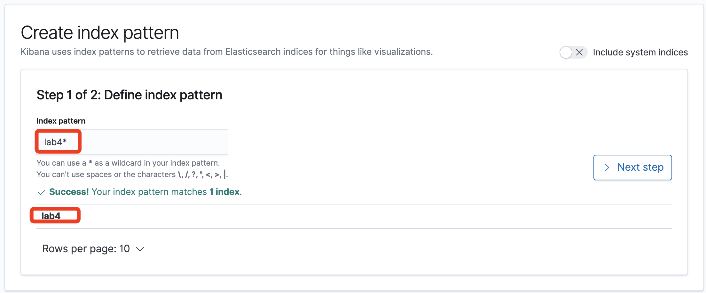

42-实时检索和可视化
要完成本章节的实验，大概需要10分钟。
本实验演示通过Kinesis Firehose 把流数据通过管道注入Elasticsearch实时检索和可视化的过程。
导入数据
登录并打开Elasticsearch控制台，确保ES集群状态是有效，并复制对应的终端节点 此处的终端节点为
vpc-lab-es-srugsr6gcfwjwtonv3exo2epmy.ap-southeast-1.es.amazonaws.com
打开Kinesis Firehose控制台，选择创建传输流，设置传输流名字“lab4-kfh”，并选择“kds-lab4”为源
下一步不对记录进行任何处理（选默认值），在下一步的目标里面选择将数据送到Elasticsearch，并选择我们部署的ES集群，以及数据的索引名（此处为lab4），如下图所示

需要配置S3转存储一份（或保留发送失败的记录），配置对应桶和路径即可
接下来的缓冲区设置为1M或者60秒即可（其他全部默认）
然后选择审核并创建传送流即可。
登录ES集群并创建Index
传送流创建成功后，配置一个端口转发实现本地登录ES集群（此处需要用到刚才准备的终端节点地址和之前部署的EC2的IP地址），这其实是在我们的客户端跟ES集群之间通过之前部署的EC2构建了一个隧道，实现内网访问，如果各位习惯其他的构建内网方式（或者公司内部有构建跟AWS部署服务之间的VPN），都是可以的，只要能访问到即可
sudo ssh -L 443:vpc-lab-es-srugsr6gcfwjwtonv3exo2epmy.ap-southeast-1.es.amazonaws.com:443 -i kp-sin.pem ec2-user@54.169.129.145
上述命令的结果是通过那个EC2在本地和ES集群的机器之间构建了一个隧道，城后即可使用如下地址打开Kibana集群
https://localhost/_plugin/kibana/
注意：如果是Windows客户端，请参考如下文档做端口转发
https://www.jianshu.com/p/675c3bcba28c
登录Elasticsearch集群后，选择创建索引
系统已经发现了Index为lab4的相关数据，我们直接输入lab4即可（注意：如果此处看不到数据，请略微等待，如果长时间等待依然没有数据，请确认Kinesis Firehose的配置是否准确） 
接下来选择tuptime为时间戳即可
通过选择对应字段，我们即可看到对应数据
按时间维度查看
接下来我们来创建第一个可视化图表（按时间维度查看销售额），首先创建一个视图
类型选择 Vertical Bar
类型选择 数据源
在Y-axis界面，aggregation下拉框选择sum，field选择 total，并备注为总销售额
在Buckets界面，点击add，选择X-axis

Aggregation选择Date Histogram，Field选择 tuptime，Minimum选择默认值 Auto（因为我们输入数据时间较短，所以难以形成例如以天为单位的汇总数据）
点击更新后获得如下图表，选择左上角的保存
设置保存名称：time_revenue。注意：图表的时间线，可以根据要求在右上角位置进行修改。
按区域维度查看
这一次我们选择表格的方式（取销售额排名前10的城市，选择表格的形式）
配置指标数据为 total 列的和
再点击add，创建split slices，Sub-aggregation 选择terms，fields选择acity.keyword，单击更新按钮
获得的Top 10城市销售金额表（注意：因为流数据一直在注入，所以数据会变），如下图所示
然后点击左上角的“save”按钮进行保存，输入图表的名称time_city
按产品维度查看
我们选择用饼图的方式来按产品维度查看

配置指标数据为 total 列的和
结合产品分类
并且配置显示标签（如果未显示标签就只有图，选中了标签以后会显示对应的备注和数据）
获得如下图所示的饼图（显示Top销量的产品分类，以及其他的汇总）
保存成：time_pclass
创建仪表盘
在上述章节的实验过程中，我们创建了3个可视化报表
这个章节，我们把刚才创建的图表做成仪表盘。点击左侧按钮，创建Dashboard，点击“create new dashboard”，点击add按钮，把刚才的三个图表添加进来
添加已经创建好的各个图表（并保存仪表盘，此处为MyLab4），效果如下
可以根据选择右上角不同的时间区间获得不同的实时统计结果，各位熟悉Elasticsearch的学员可以按照自己喜欢的方式在ES里面构建各种图表。
恭喜你，已经完成本套动手实验的最后一个（Lab4）。本着节俭的原则，请在动手实验结束后清除我们部署出来的环境。